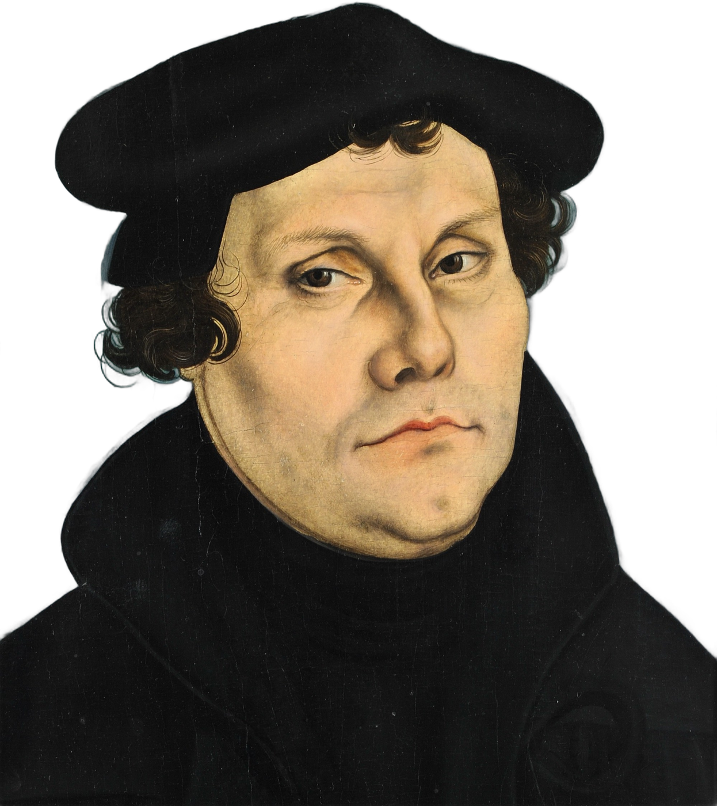
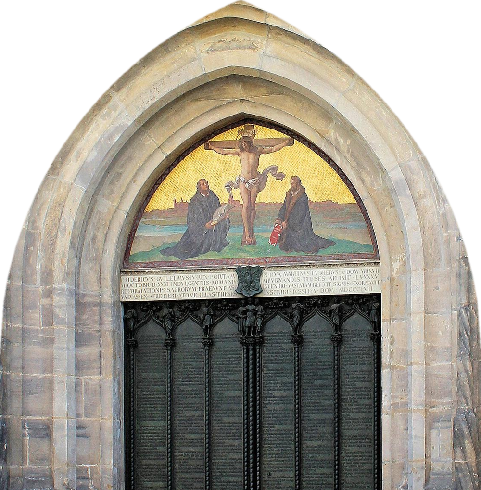
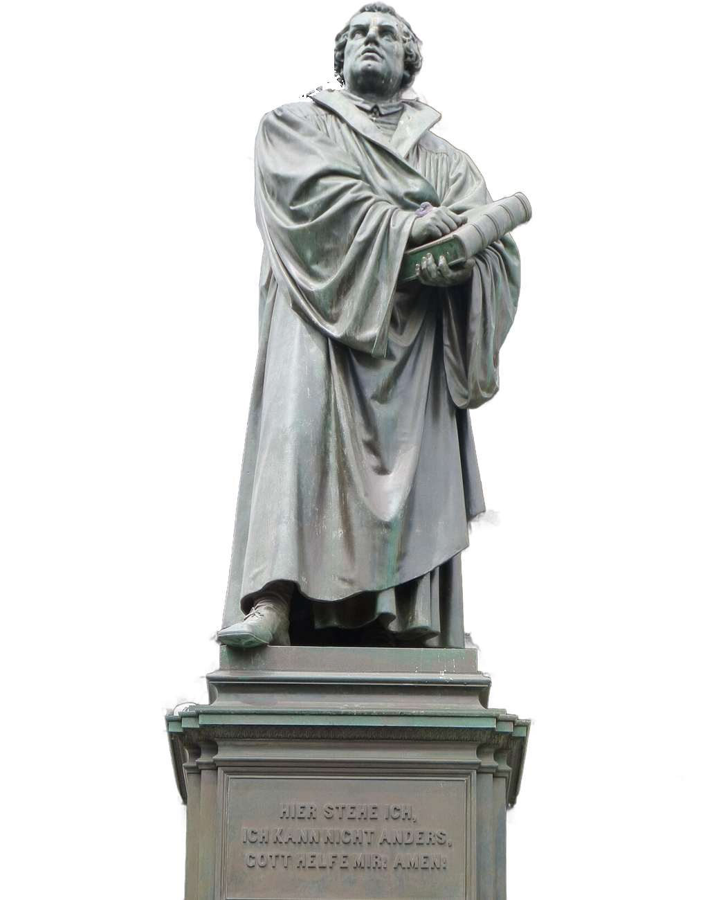
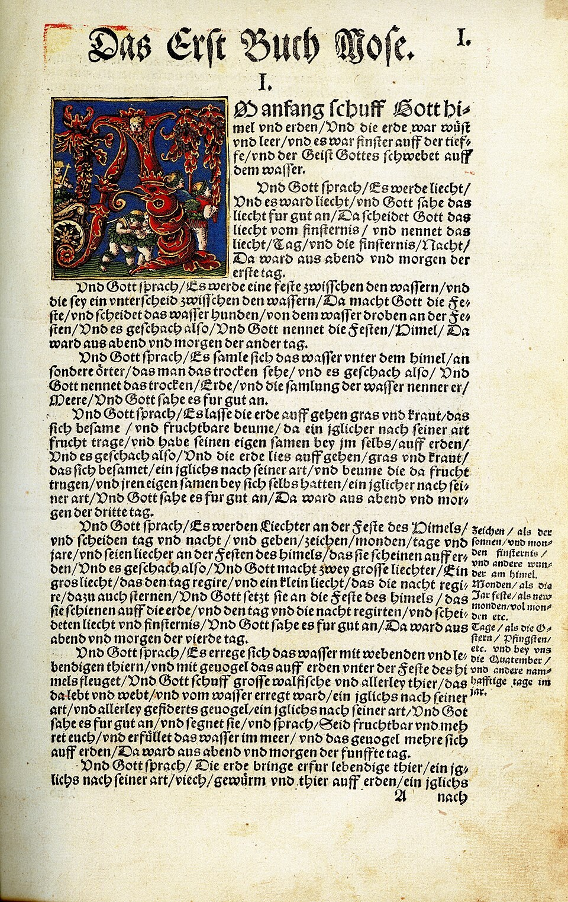

Igreja da Gratidão
O que foi a
Refor
ma?

509
anos
anos
509 anos depois, entenda em poucos slides o movimento que mudou a igreja — e o mundo.
Arrasta →
01 · Wittenberg, 1517
O que
foi?
Um monge. Uma porta.
95 teses.
95 teses.
Um movimento cristão do século XVI que chamou a igreja de volta para a Bíblia. Começou em 31 de outubro de 1517, quando o monge Martinho Lutero pregou 95 teses na porta da igreja de Wittenberg, na Alemanha.

Porta das Teses, Schlosskirche, Wittenberg (foto real)
02 / 07
02 · O estopim
Por que
aconteceu?
Porque se vendia o perdão. As indulgências eram papéis que prometiam aliviar a pena dos pecados em troca de dinheiro.
“Assim que a moeda no cofre tilinta, a alma do purgatório salta.”
Slogan atribuído a Johann Tetzel


03 / 07
03 · Worms, 1521
Lutero voltou atrás?
Aqui
estou.

Não. Diante do imperador, mandaram que ele negasse tudo o que escreveu. A resposta:
“Aqui estou. Não posso fazer outra coisa. Que Deus me ajude.”
“Aqui estou. Não posso fazer outra coisa. Que Deus me ajude.”
Monumento a Lutero, Worms — “Hier stehe ich”
04 / 07
04 · O coração da Reforma
O que ela ensinou?
Os 5 Solas

Bíblia de Lutero, 1534 — a Palavra na língua do povo
05/07

05 · Efésios 2.8
O que é a Reforma hoje?
“Porque pela graça sois salvos, mediante a fé; e isto não vem de vós; é dom de Deus.”
Graça
gera ↓
Gratidão
É viver pela graça. E quem recebe graça vive grato — por isso somos a Igreja da Gratidão.
06 · Semper reformanda
E pra você?
A Reforma
não acabou.
Ela continua toda vez que alguém abre a Bíblia, crê na graça e vive grato.
Ela continua
em você.
@igrejadagratidao
Salva
Compartilha